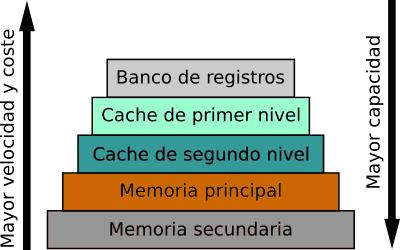
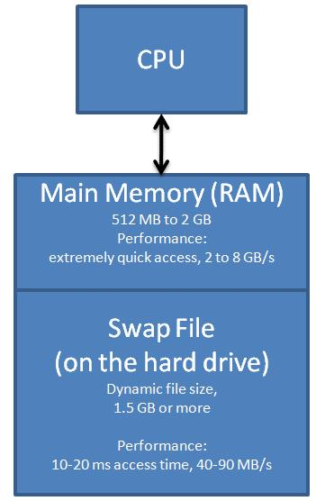
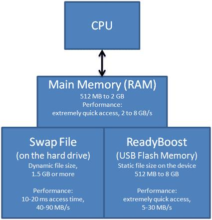

La situación ideal en cualquier equipo informático es la de una única memoria de capacidad infinita, rápida, no volátil y de un coste muy bajo. Es, por tanto, un componente clave que se utiliza para almacenar tanto los datos como las instrucciones que necesita la CPU para ejecutar operaciones. Existen varios tipos de memoria, organizados en una jerarquía que optimiza el acceso a la información:

Para entender el concepto de jerarquía de memoria hay que tener en cuenta, tal y como se muestra en el gráfico anterior, que la memoria incrementa el coste cuánto más rápida y más capacidad tiene de tal manera que no es viable fabricar un ordenador con gran capacidad de la memoria más rápida. También hay que tener en cuenta que cuanto mayor es la capacidad de la memoria, más díficil será conseguir que ésta sea rápida.
Así, cualquier equipo actual posee una cierta cantidad de varios niveles de memoria, empezando por una memoria muy rápida, de pequeña capacidad y de un coste muy elevado, para terminar con una memoria muy lenta, de gran capacidad y de un coste muy bajo, pasando por varios tipos de memoria de características y prestaciones intermedias.
Memoria Caché: Es la memoria más cercana al procesador y la más rápida. Se divide en niveles (L1, L2, L3), siendo L1 la más rápida y pequeña. La memoria caché es una memoria de alta velocidad y pequeña capacidad (más lenta que los registros de la CPU pero de mucha más capacidad que éstos). Su utilidad es la de almacenar los datos e instrucciones más utilizados por los programas, puesto que por norma general se tiende a acceder en gran medida a los mismos datos e instrucciones una y otra vez. De esta manera, se evita que el ordenador deba acceder a memoria RAM, que es mucho más lenta que esta memoria. Cada vez que el dato se encuentra en memoria caché se dice que se ha producido un acierto. Esa será entonces la medida a evaluar para saber si una memoria caché es buena.
Otro aspecto que cabe destacar a la hora de tener en cuenta una memoria caché, es el nivel que ocupa ésta. En ese caso hablamos de memorias caché de nivel 1 (L1, integrada en el procesador), nivel 2 (L2) y nivel 3 (L3), en función de la distancia a la que se encuentran del procesador. De esa manera, cuanto más cerca del procesador más rápida es pero también disminuye su capacidad. En la actualidad, la gran mayoría de procesadores disponen de una memoria caché L2 integrada ya en el procesador junto a una pequeña porción de caché L1 de unos pocos KBs y no se dispone de memoria de nivel 3
Memoria RAM (Memoria de Acceso Aleatorio): La memoria principal, también conocida como memoria RAM, está directamente conectada a la CPU a través de un bus de direcciones y un bus de datos. Debe estar presente para que ésta funcione puesto que contendrá, en todo momento, los programas o procesos en ejecución y los datos con los que se opera.
Es un tipo de memoria de lo que se conoce como acceso aleatorio, denominación que surge para diferenciarlas de las memorias de acceso secuencial, donde el acceso a un dato pasaba por acceder primero a todos los datos que estaban situados por delante de éste (cinta de datos). Con las memorias de acceso aleatorio es posible acceder directamente a cualquier dato, sin tener que pasar antes por ningún otro.
Hay que tener en cuenta también que es una memoria volátil, por lo que en ausencia de alimentación perderá su información.
Es una memoria de mucha más capacidad que la memoria caché pero bastante más lenta que ésta. Por el contrario, es mucho más rápida que la memoria secundaria, pero también de menor capacidad y de un coste superior.
La memoria principal se puede ver como un conjunto de celdas donde cada una de estas celdas se identifica con una dirección diferente para que el procesador pueda direccionarlas. Así, como se ha comentado anteriormente son necesarios dos buses para comunicarse con la memoria principal:
- Bus de direcciones: Que permite direccionar o seleccionar que celda de la memoria principal se leerá/escribirá en la siguiente operación. Dependiendo del tamaño de este bus de direcciones, el procesador podrá direccionar más o menos de esas celdas de memoria
- Bus de datos: Que permite que el dato que se escribe/lee viaje de la CPU a la memoria principal. Dependiendo del tamaño de este bus, se permitirá transferir datos de mayor o menor tamaño al mismo tiempo
Memoria ROM (Memoria de Solo Lectura): Almacena el firmware del sistema. Es una memoria no volátil, lo que significa que conserva los datos incluso cuando el sistema está apagado.
Memoria Secundaria: Como discos duros (HDD) y unidades de estado sólido (SSD), estas almacenan grandes cantidades de datos a largo plazo, pero son mucho más lentas en comparación con la RAM y la caché.
La memoria secundaria se caracteriza, principalmente, por ser de gran capacidad y no volátil. Cuando se habla de memoria secundaria se hace referencia al disco duro puesto que es el dispositivo más común que se utiliza como almacenamiento secundario y, hoy en día, se ha convertido en un elemento indispensable en un ordenador.
Por otro lado, y debido principalmente al encarecimiento de la memoria principal, existen algunos mecanismos muy extendidos que permiten al Sistema Operativo hacer funcionar la memoria secundaria (que es barata) como si fuera memoria principal. Es lo que se conoce como memoria virtual (swap) y ReadyBoost, que aunque no son elementos hardware merece la pena mencionarlos aquí puesto que están muy relacionados con los elementos de memoria de un sistema.

